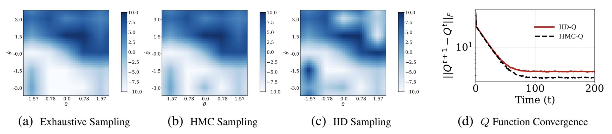
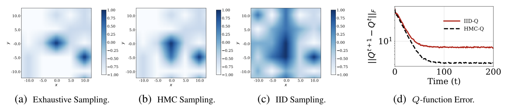

Overview
Model-free reinforcement learning (RL), in particular \(Q\)-learning is widely used to learn optimal policies for
a
variety of planning and control problems. However, when the underlying state-transition dynamics are stochastic
and high-dimensional, \(Q\)-Learning requires a large amount of data and incurs a prohibitively high computational
cost. In this work, we introduce Hamiltonian \(Q\)-Learning, a data efficient modification of the \(Q\)-learning
approach, which adopts an importance-sampling based technique for computing the \(Q\) function. To exploit
stochastic structure of the state-transition dynamics, we employ Hamiltonian Monte Carlo to update \(Q\) function
estimates by approximating the expected future rewards using \(Q\) values associated with a subset of next states.
Further, to exploit the latent low-rank structure of the dynamic system, Hamiltonian \(Q\)-Learning uses a matrix
completion algorithm to reconstruct the updated \(Q\) function from \(Q\) value updates over a much smaller subset
of
state-action pairs. By providing an efficient way to apply \(Q\)-learning in stochastic, high-dimensional
problems,
the proposed approach broadens the scope of RL algorithms for real-world applications, including classical control
tasks and environmental monitoring.

Results are provided for a cartpole system. Figures (a), (b) and (c) show policy heat maps for
\(Q\)-Learning with exhaustive sampling, Hamiltonian \(Q\)-Learning and \(Q\)-Learning with IID sampling,
respectively. Figure (d) provides a comparison for convergence of \(Q\) function with
Hamiltonian \(Q\)-Learning and \(Q\)-Learning with IID sampling.
Application to adaptive ocean sampling
Ocean sampling plays a major role in a variety of science and engineering problems, ranging from modeling marine
ecosystems to predicting global climate. Here, we consider the problem of using an under water glider to obtain
measurements of a scalar field (e.g., temperature, salinity or concentration of a certain zooplankton) and
illustrate how the use of Hamiltonian \(Q\)-Learning in planning the glider trajectory can lead to measurements
that minimize the uncertainty associated with the field.

Figures (a), (b) and (c) show policy heat maps for
\(Q\)-Learning with exhaustive sampling, Hamiltonian \(Q\)-Learning and \(Q\)-Learning with IID sampling,
respectively. Figure (d) provides a comparison for convergence of \(Q\) function with
Hamiltonian \(Q\)-Learning and \(Q\)-Learning with IID sampling.
Bibtex
@article{madhushani2020QLearning,
title={Hamiltonian Q-Learning: Leveraging Importance-sampling for Data Efficient RL},
author={Madhushani, Udari and Dey, Biswadip and Leonard, Naomi Ehrich and Chakraborty, Amit},
conference={under review},
year={2020}
}